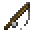

Rivers and fishingFishing
What bites depends on the water (rapids, river, lake, swamp or sea), the season and the hour.
Each fish is weighed as you land it.
Rivers and rapids
Trout and grayling love the rapids; trout bite best at dawn and dusk. Eels feed by night.
In autumn the salmon run up the rivers.
Lakes and swamps
Perch bite by day, pike at dawn and dusk, carp all summer. Catfish lurk in warm swamps at night.
In the frozen north, Arctic char live under the ice: break a hole and fish through it.
Fishing log
Brown Trout · not yet
Grayling · not yet
Perch · not yet
Pike · not yet
Carp · not yet
Eel · not yet
Catfish · not yet
Arctic Char · not yet
Blind Cave Fish · not yet
Fishing log: sea
Raw Salmon · not yet
Raw Cod · not yet
Pufferfish · not yet
Tropical Fish · not yet
Your heaviest of each, and how many you've landed.
Cooking fish
Cook any fish, then smoke it in a smoker, bake it into fish pie, or cook trout with garlic and onion.
River fish
Look into a river: trout, grayling and char hold their place in the current, facing upstream, darting off after a fly now and then.
Pike lie still in wait.
A bucket of fish
Use a water bucket on a river fish to carry it home; the bucket says which fish is inside.
Let it go in a pond of your own.